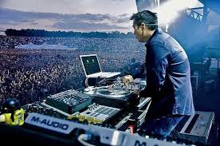
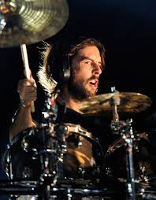
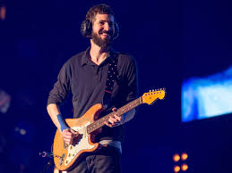

Chester Bennington
Chester Charles Bennington (Phoenix, Arizona, 1976. március 20. – Los Angeles, Kalifornia, 2017. július 20.)
a Linkin Parkon kívül a Dead by Sunrise frontembere. A Linkin Parkkal hét stúdióalbumot adtak ki, a Dead by Sunrise első albumát 2009-ben adták ki.
2007-ben Chester 46. lett a Hit Paraders „Heavy Metal's All-Time Top 100 Vocalists”-ján (Minden idők legjobb 100 heavy metal énekese).
Halála
Benningtonra 2017. július 20-án reggel találtak rá holtan Los Angeles-i otthonában, az énekes öngyilkos lett, felakasztotta magát.
Kora ifjúkorában évekig kábítószer- és alkoholproblémákkal küzdött, mivel a gyerekkorában történt fizikai bántalmazás megviselte.
Közeli barátja, Chris Cornell, 2017. május 18-án hasonló módon végzett magával, Bennington egyik fellépésükön neki ajánlotta az együttes egyik dalát,
öngyilkosságát pedig Cornell születésnapjára időzítette.
Mike Shinoda
Michael „Mike” Kenji Shinoda (1977. február 11-én született Agourában, Kalifornia államban)
A Linkin Park egyik alapítója, a zenekar rappere, énekese, dalszerzője, billentyűse, ritmusgitárosa. Másrészt a Fort Minor rappere.
Ezen kívül Joe Hahn-nal együtt végzi a grafikai, illetve keverési munkákat.
Joseph Hahn

Joseph Hahn (1977. március 15-én született Dallas-ban Texas államban) DJ, rendező. Ő volt a felelős a Linkin Park mind a 7 albumának keverési munkájáért, és a hangzási világának megteremtéséért.
Ezen kívül ő találja ki a klipek koncepcióját.
Rob Bourdon

Robert Gregory Bourdon (1979. január 20-án született Calabasasben, Kalifornia államban) dobos.
A banda legfiatalabb tagja és az egyik alapítótagja. Bourdon fiatalkorában találkozott az Aerosmith dobosával (Joey Kramer),
ő inspirálta, hogy megtanuljon ezen a hangszeren játszani.
Brad Delson

Brad Delson (1977. december 1éjén született Agourában, Kalifornia államban) gitár. Az együttes harmadik alapítótagja.
A Linkin Park legviccesebb tagja. Nagy viccmeséléseiről híres, de ennek ellenére komoly ember.
Ért a technikához és a számítógépekhez. Kiskorában Mike szomszédja volt, együtt nőttek fel.
Phoenix
David Michael "Phoenix" Farrell (1977. február 8-án született Plymouth-ban, Massachusetts államban) A banda basszusgitárosa.
A középiskolában a Tasty Snax (The Snax) nevű együttesben gitározott.